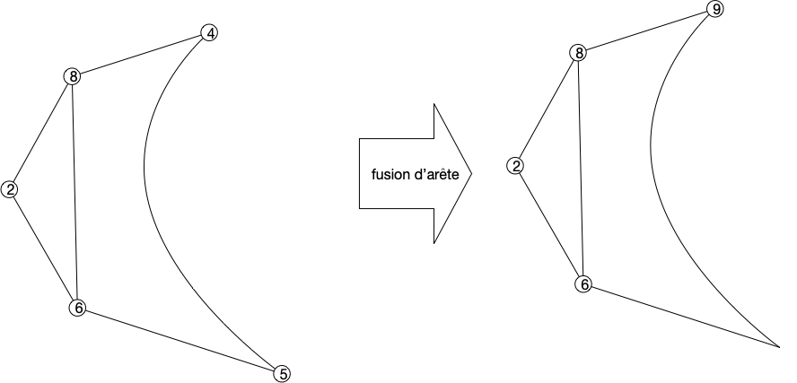

Caractérisation des graphes planaires
Preuve d'un théorème de Jordan simplifié
TBD suffisant pour les graphes où les sommets sont dénombrables. TBD si courbe alors polygone alors droites
Caractérisation
La caractérisation des graphes planaire de Kuratowski se fait par "mineur exclu". C'est à dire caractériser les graphes qui vont nous empêcher de réussir un dessin planaire
Définition
Soit $G$ un graphe. Un graphe $H$ est un mineur de $G$ s'il peut être obtenu par un nombre quelconque des opérations suivantes :
- suppression d'un sommet sans voisin
- suppression d'une arête
- contraction d'un arête: on fusionne l'arête en un nouveau sommet $z$ dont les voisins sont les voisins des anciens sommets formant l'arête
En deux mots, les mineurs sont les graphes cachés dans un graphe plus gros :

Planarité des Mineur
Proposition
Si est $G$ un graphe planaire alors tous ses mineurs le sont aussi.
preuve
preuve
Les trois opérations pour créer un mineur d'un graphe fonctionnent aussi sur son dessin :
- la suppression d'un sommet ou d'une arête ok
- la contraction d'un arête se fait en concaténant les courbes des arêtes supprimées, comme sur le dessin ci dessous.

On a donc déjà la proposition suivante :
Proposition
Si $G$ est planaire, il ne peut avoir ni $K_5$ ni $K_{3,3}$ comme mineur
preuve
preuve
Clair puisque l'on a montré que ni $K_5$ ni $K_{3,3}$ ne peuvent être planaire.
Réciproque
La réciproque est également vraie et c'est cette partie qui va être plus difficile à démontrer.
- cycle et 2-connectivité
- relation d'équivalence entre arêtes donne les composantes 2-connexes e R f si e = f ou s'il existe un cycle élémentaire contenant e et f
- composantes 2-connexes
Séparation par arêtes (déconnecte le graphe) ou par point d'articulation (via algorithme DFS et retour).
Proposition
Si $G$ est planaire si et seulement si ses composantes 2-connexes le sont
preuve
preuve
Les composantes 2-connexes sont liées uniquement par un sommet d'articulation ou une arêtes.

Le graphe dont les sommet sont les composantes 2-connexe et une arête si connexion est un arbre (sinon il existe un cycle et du coup plus gros)
TBD caractérisation par mineur exclus gros théorème de Seymour.
-
définitions et propriétés + Kuratowsky : https://perso.ens-lyon.fr/eric.thierry/Graphes2009/theophile-trunck.pdf ou https://perso.ens-lyon.fr/eric.thierry/Graphes2007/vincent-nivoliers.pdf On a besoin de :
- coloriabilité via le problème de la galerie d'art :
- https://fr.wikipedia.org/wiki/Problème_de_la_galerie_d'art
- exercices : https://static.idm314.org/resources/activities/idm-art-gallery-fr.pdf
- TIPE : https://cpge-paradise.com/TIPE/Baudoin_Solal/PPT_Baudoin_Solal.pdf
- théorème de Jordan : https://minerve.ens-rennes.fr/images/Le_Théorème_de_Jordan_S.Quayle_V.Le_Gruiec..pdf
- k-connectivité
- coloriabilité via le problème de la galerie d'art :
-
preuve Kuratowski juste avec 2-connexité: https://www.math.cmu.edu/~mradclif/teaching/228F16/Kuratowski.pdf
-
planaire et embedding : https://www.youtube.com/watch?v=MNgKx4A1pXM&list=PLriUvS7IljvkGesFRuYjqRz4lKgodJgh2&index=13
- topologie et courbe fermée Jordan : https://pagesperso.g-scop.grenoble-inp.fr/~lazarusf/Enseignement/graphesPlans.pdf
- exercices : http://www.gymomath.ch/javmath/polycopie/th_graphe5.pdf
- preuve simple ? https://www.sciencedirect.com/science/article/pii/0012365X80901454